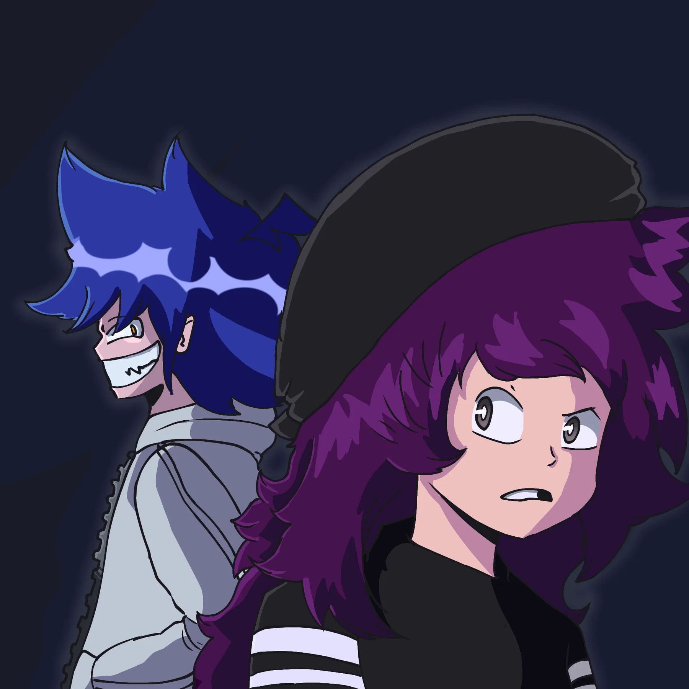
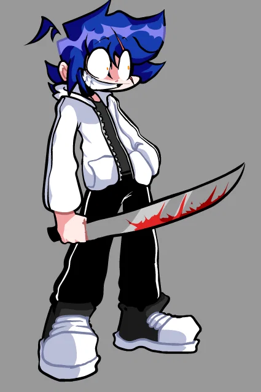
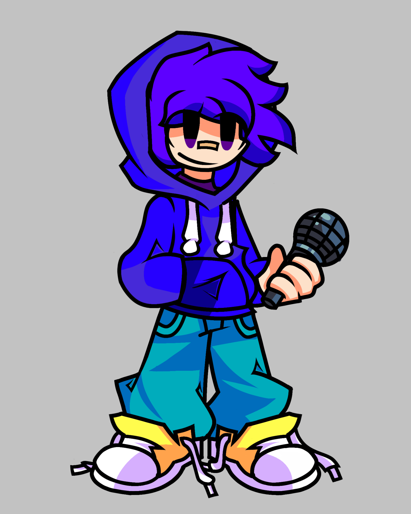
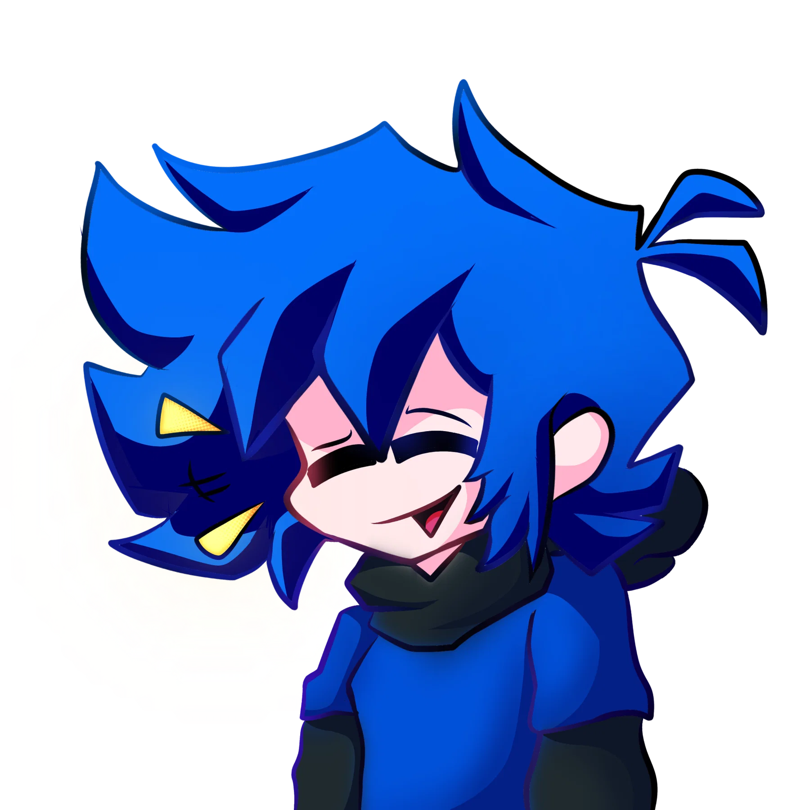
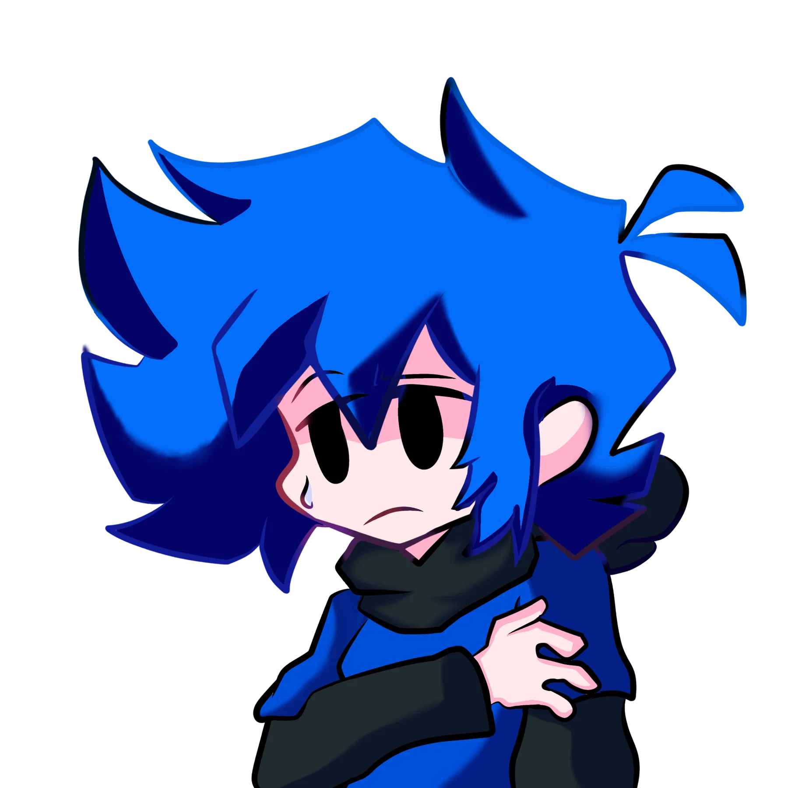
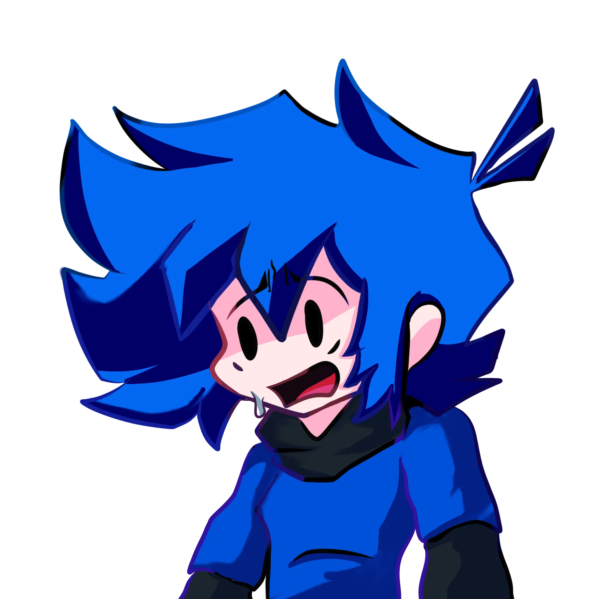

ARCHIVO REPRODUCIBLE
Annihilation
Primer encuentro musical · 3:52 · crédito musical no indicado.
Un experimento no planeado de Naturalis Melodies: Kamer entra a una mansión abandonada para refugiarse de la lluvia y encuentra a Dark. La idea nació como algo divertido y nunca se fijó como semana oficial.


Asesino encontrado dentro de la mansión. Su aparición dispara el escape de Kamer.
Primer encuentro musical · 3:52 · crédito musical no indicado.
Tras escapar, Kamer tarda en recuperarse y busca a Cris cerca de una montaña. Se cambia de ropa y trata de calmarse cantando.

Versión principal · 2:32 · crédito pendiente.
Boceto alternativo · 0:55 · crédito pendiente.

01Kamer: “Hehe, nada mal, Cris… ¿cómo están Zafiro y Jeyzel?”

02Cris nota que algo no está bien y deja de bromear.

03Cris ve el brazo herido de Kamer y reacciona alarmado.